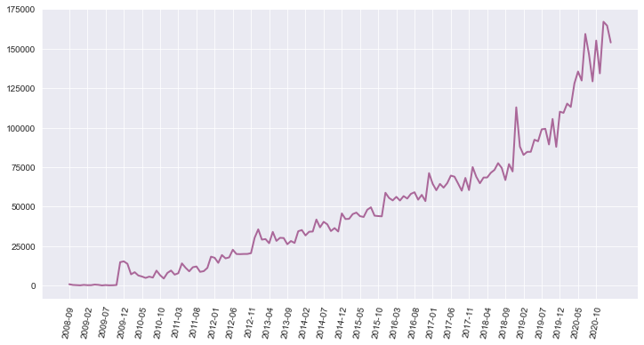
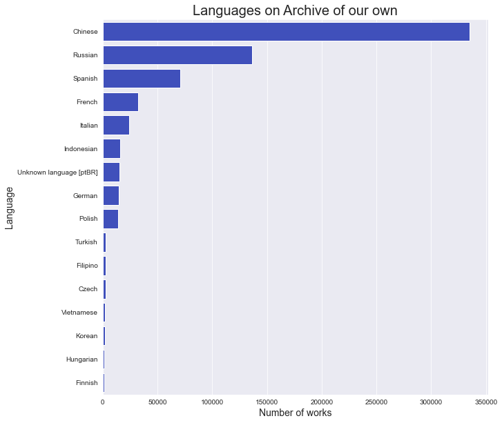
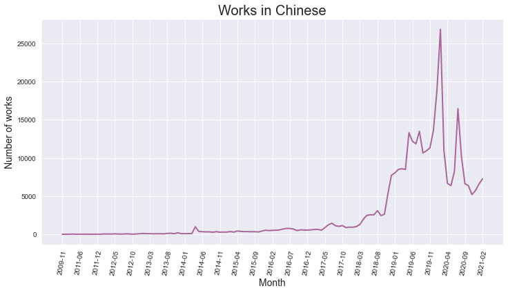
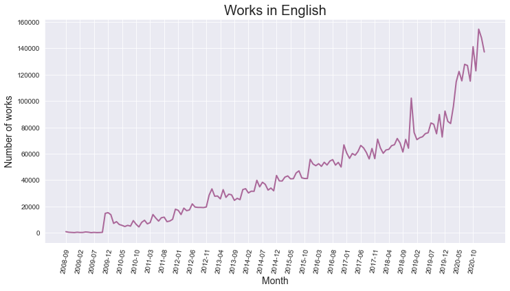
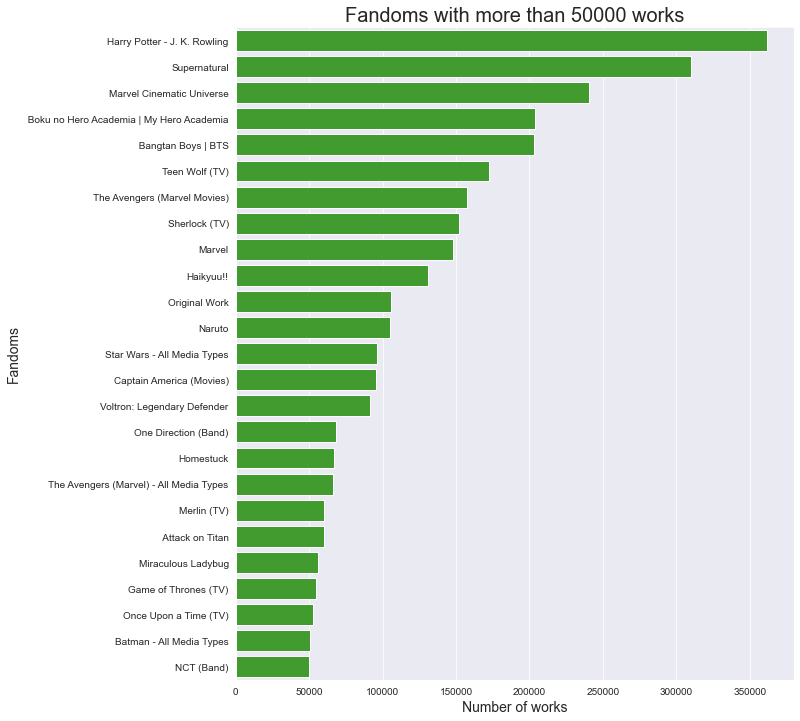

Number of works
Contents
import pandas as pd
from os.path import join
from collections import Counter
import matplotlib.pyplot as plt
import matplotlib.ticker as ticker
import seaborn as sns
from langcodes import *
import language_data
import re
def counter_to_axes(counter_obj):
x_axis = list(counter_obj.keys())
y_axis = list(counter_obj.values())
return (x_axis,y_axis)
The analyses in this notebook are based on the data dump for fan statisticians shared via the Archive of our own website.
directory = '20210226-stats'
csv1 = 'works-20210226.csv'
path = join(directory,csv1)
works = pd.read_csv(path)
print(f"The dataset contains works created in between {works['creation date'].min()} and {works['creation date'].max()} ")
The dataset contains works created in between 2008-09-13 and 2021-02-26
Number of works#
def year_month(date):
month = f"{date.month:02d}"
return f'{date.year}-{month}'
works['creation date'] = pd.to_datetime(works['creation date'])
works['year_month'] = works['creation date'].apply(year_month)
creation_dates = Counter(sorted(works['year_month']))
x_axis, y_axis = counter_to_axes(creation_dates )
sns.set_style("darkgrid")
fig = plt.figure( figsize = ( 12, 6))
ax = sns.lineplot(x=x_axis, y=y_axis,
color= '#AA6799', linestyle='solid',
linewidth=2 )
ax.set_xticks(ax.get_xticks()[::5]);
plt.xticks(rotation= 80)
plt.show()

Languages#
def find_language_name(lang):
name = ''
if not(pd.isna(lang)):
name = Language.make(language=lang).display_name()
else:
name = 'Unknown language'
return name
languages = Counter(works['language'])
df = pd.DataFrame.from_dict(languages,orient='index').reset_index()
df.columns = ['language','count']
df['language_name'] = df['language'].apply(find_language_name)
english_works = str(df.query('language=="en"')['count'].iloc[0])
print(f'The archive contains {english_works} works in English')
The archive contains 6587693 works in English
df = df.query( 'language!="en"')
df = df.query( 'count>1000')
df = df.sort_values(by=['count'],ascending=False)
fig = plt.figure( figsize=( 10 , 10 ) )
graph = sns.barplot(data=df,x='count',y='language_name',color="#2b41cf")
graph.set_title('Languages on Archive of our own' , size = 20)
graph.set_xlabel('Number of works' , size = 14)
graph.set_ylabel('Language' , size = 14 )
plt.show()

chinese_works = works.query('language == "zh"')
creation_dates = Counter(sorted(chinese_works['year_month']))
x_axis, y_axis = counter_to_axes(creation_dates )
sns.set_style("darkgrid")
fig = plt.figure( figsize = ( 12, 6))
ax = sns.lineplot(x=x_axis, y=y_axis,
color= '#AA6799', linestyle='solid',
linewidth=2 )
ax.set_xticks(ax.get_xticks()[::5]);
ax.set_title('Works in Chinese' , size = 20)
ax.set_xlabel('Month' , size = 14)
ax.set_ylabel('Number of works' , size = 14 )
plt.xticks(rotation= 80)
plt.show()

chinese_works = works.query('language == "ru"')
creation_dates = Counter(sorted(chinese_works['year_month']))
x_axis, y_axis = counter_to_axes(creation_dates )
sns.set_style("darkgrid")
fig = plt.figure( figsize = ( 12, 6))
ax = sns.lineplot(x=x_axis, y=y_axis,
color= '#AA6799', linestyle='solid',
linewidth=2 )
ax.set_xticks(ax.get_xticks()[::5]);
ax.set_title('Works in Russian' , size = 20)
ax.set_xlabel('Month' , size = 14)
ax.set_ylabel('Number of works' , size = 14 )
plt.xticks(rotation= 80)
plt.show()

Word count#
avg = works['word_count'].mean()
print(f"Average word count is {round(avg,2)} words.")
print(f"The longest work has {int(works['word_count'].max())} words.")
Average word count is 7213.85 words.
The longest work has 5078036 words.
ax = sns.distplot(works.query('word_count<50000')['word_count'])
ax.set_title('Distribution of works with less than 50000 words' , size = 20)
plt.show()
/Library/Frameworks/Python.framework/Versions/3.7/lib/python3.7/site-packages/seaborn/distributions.py:2619: FutureWarning: `distplot` is a deprecated function and will be removed in a future version. Please adapt your code to use either `displot` (a figure-level function with similar flexibility) or `histplot` (an axes-level function for histograms).
warnings.warn(msg, FutureWarning)

Tags#
directory = '20210226-stats'
csv2 = 'tags-20210226.csv'
path = join(directory,csv2)
tags = pd.read_csv(path)
import warnings
warnings.filterwarnings("ignore")
def remove_non_ascii(text):
new_text = text
if re.search(r'[|]',text):
index_pipe = text.index('|')
new_text = text[index_pipe+1:]
return new_text
max_works = 50000
fandoms = tags.query('type=="Fandom"')
fandoms['name'] = fandoms['name'].apply(remove_non_ascii)
fandoms = fandoms.query('cached_count>{}'.format(max_works))
fandoms = fandoms.sort_values(by="cached_count",ascending=False)
fig = plt.figure( figsize=( 10 , 12 ) )
graph = sns.barplot(data=fandoms,y='name',x='cached_count',color="#35ad1d")
graph.set_title(f'Fandoms with more than {max_works} works' , size = 20)
graph.set_xlabel('Number of works' , size = 14)
graph.set_ylabel('Fandoms' , size = 14 )
plt.show()
